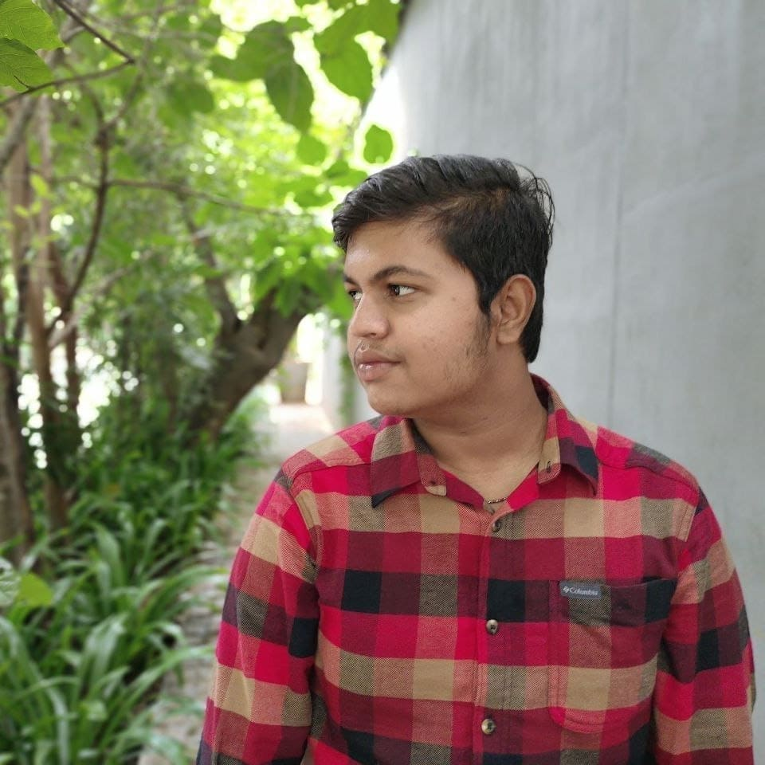

Gmail: gani29082004@gmail.com
Contact Number: 8296564776

An AIML Enthusiast
Seeking opportunities to apply and further develop my skills in Python, HTML to contribute effectively to innovative projects and gain valuable experience in the field.
Bachelor of Computer Applications (BCA)
Dayananda Sagar University, Bangalore, India
Expected Graduation: [2025]
Current GPA: [7.3]
Proficient in Java programming language for application development.
Skilled in HTML for web development projects.
Strong problem-solving skills and ability to work effectively both independently and in a team environment.
Excellent communication and time-management skills.
Project Name: AIML TIC TAC TOE (human vs ai player)
Created a normal player vs player tic tac toe game using Java